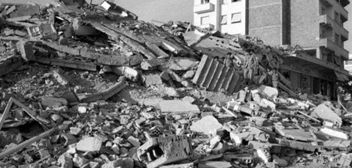

The Orphan from Agadir
53 years ago this month, eighty-eight students in the Chabad yeshiva in Agadir, Morocco perished in a powerful and devastating earthquake that rocked the city. It was one of the worst disasters to befall the Chabad world in a generation. Several years later, Yitzchak Nimtzovitz of “Galei Tzahal,” Israel’s Army Radio, brought the story of Avraham Dabra, a student in the Chabad yeshiva in Morocco, who lost his entire family in the tragedy. He emigrated to Eretz Yisroel soon afterwards, learning in the Kfar Chabad vocational school. In this deeply moving interview, he spoke with great emotion about his family and classmates.
Compiled By Shneur Zalman Berger
Translated by Michoel Leib Dobry

Agadir, Morocco. 3rd of Adar, 5720.
A powerful earthquake (nearly 8.0 on the Richter scale) hit the city, moving the ground like the sea against the shore. Houses quickly collapsed one after another. The entire city was stunned. The loss and destruction was everywhere. Tens of thousands of people were buried under the rubble. The aid and rescue forces stood helpless in the face of this horrific tragedy.
After about ten days of searching, estimates were that as many as ten thousand people had been killed, including two thousand Jews. Among the Jewish casualties were eighty-eight students from the Chabad-Lubavitch yeshiva (although the exact numbers have not been determined to this day). The destruction was so extensive that the authorities decided not to renovate the city on its original location, choosing instead to rebuild it nearby.
During those years, the Chabad empire in Morocco included magnificent educational institutions and thousands of students. The Rebbe’s shluchim fulfilled their mission to spread Judaism throughout the country, while placing a special emphasis upon the larger cities and their sizable Jewish populations.
In Agadir, the shliach and rosh yeshiva had been the gaon Rabbi Azriel Chaikin shlita, but the authorities drove him out, accusing him of organizing Zionist activities. This was two years before the earthquake. In his place, Rabbi Chaim Elbaz was appointed as the new Chabad rosh yeshiva. Rabbi Chaikin’s expulsion was a source of great anguish, but it later proved to be a miracle of lifesaving proportions, as Rabbi Elbaz and dozens of yeshiva students were lost in the catastrophe.
While the Beis Moshiach Magazine reviewed this story at length many years ago (see Issue #243), we now bring a more personal and touching perspective on this event.
THE GROUND SUDDENLY BEGINS TO SHAKE
Avraham Dabra, then a student in the local Chabad yeshiva, was one of the survivors. He eventually emigrated to Eretz Yisroel and learned in the Kfar Chabad vocational school. Several years later, Yitzchak Nimtzovitz of “Galei Tzahal,” Israel’s Army Radio, heard his gripping personal account. Here is his report:
It was six o’clock, on the morning of the 2nd of Adar, 5720 (February 29, 1960). Sulika Dabra woke up her twelve-year old son Avraham to go to his classes at the Chabad yeshiva in Agadir, a commercial and tourist city situated along Morocco’s Atlantic coast. The young boy stayed in bed a little while longer, together with his two younger brothers, eight-year old Eliyahu and two-year old Masud. His mother came back again to wake him up. Not long afterwards, his father, Machluf, also woke up, and after davening Shacharis they all sat down for breakfast. “Come home as soon as school is over,” his mother instructed him. Avraham kissed his mother and father, took a quick glance at his little brothers still sleeping, placed his small hand on the mezuzah, kissed it, and ran to the Chabad yeshiva with a smile of delight on his brownish face. It wasn’t long before Avrohom’s twittering voice mixed with those of more than a hundred yeshiva boys, as they sat hunched over their table learning Gemara.
At half past ten that evening, Avraham closed his Gemara and left the yeshiva together with his friends. It was a walk of about fifteen minutes from the Chabad yeshiva to his house, but Avraham urged his friends to come with him to the city for a while. It was 11:40 p.m., when suddenly the ground began to convulse underneath them. A frightful sound like tidal waves and roaring water erupted from a distance of about eight hundred yards inside the city. Within fifteen seconds, the city was turned into desolation. Ninety percent of the city’s buildings had been totally destroyed. Among the nine thousand people who perished in this terrible earthquake was virtually the whole Jewish population of Agadir – close to two thousand men, women, and children, including Avrohom’s entire immediate and extended family throughout the city. The ruin and destruction failed to miss the Chabad yeshiva: Seventy of its one hundred yeshiva students were killed (interviews with survivors in later years fixed the death toll at eighty-eight); ten were seriously injured. Only about twenty survived, and they were transferred to the Chabad yeshiva in Casablanca. The [acting] Chabad rosh yeshiva in Agadir, Rabbi Chaim Elbaz, who was due to get married that fateful week, met his death together with his students.
Avraham and his friends, who were on their way home when the tragedy struck, began running up the hill towards the city. He searched for his parents, but he couldn’t find the house. The city looked like it had gone through an avalanche. He went around the devastated city with his friends the whole night. Finally, in the early hours of the morning, he stood near the remains of his parents’ house. Over a period of three days, he helped the evacuation teams clear the rubble. From their seven-story apartment building, home to hundreds of residents, only five seriously injured people had been rescued. With each passing hour, the bodies of more missing neighbors were discovered in the ruins. Avraham prayed and hoped that his family would be saved. However, it was not to be; his prayers had not been answered. The sight now before him after three days of searching was one he would never forget. The four of them were lying there motionless before his very eyes: his father, his mother, and his two small brothers. When they finally revived him from the shock, he found himself in the arms of a Jewish woman who had pity on him and tried to encourage him to continue on. That same day, little Avraham accompanied his beloved family to the Jewish cemetery, as he said “Kaddish” after them. Totally alone in the world, he went to stay with this woman for the next several days. Avraham was simply inconsolable.
FROM CASABLANCA TO KFAR CHABAD
The Jewish Aid Committee transferred Avraham to the Chabad yeshiva in Casablanca, where he remained for one year. He tried to find consolation in learning s’farim, but he couldn’t sleep at night. His mother and father would appear to him in his dreams, and when he would wake up, he would feel the bitter reality all around him and his suffering intensified.
At the end of his year in Casablanca, Avraham immigrated in Eretz Yisroel. He stayed for two weeks in a Youth Aliya emergency camp in Ramat Hadassah, and from there he was sent to the Kfar Chabad vocational school.
I met him there near the printing press, together with dozens of Kfar Chabad youngsters. He is learning to be a professional printer. He spends half a day at work, and half a day studying. We sat together on the grass.
“MY FATHER WANTED ME TO BE A RAV”
“My father was the owner of a hotel in Agadir, and he wanted me to be a rav,” Avraham recalled. “We all thought about immigrating to Eretz Yisroel. My two brothers were so special. Eliyahu was already going to school. He knew how to sing so beautifully, and on Friday nights he would chant the Shabbos z’miros with all of us.”
Avraham then lowered his head and told me, “I say five chapters of T’hillim every day in their memory, and on the anniversary of the tragedy I fast the whole day, sit in synagogue, learn Torah, and cry – because I miss them. I don’t even have a picture left, not of my mother, not of my father, not of my brothers. It’s a pity that I’m not an artist; I would like to make a drawing of them from memory, as I do remember them very well. Then I would be able to look at them always. I can’t even go to their burial place, since they’re still in the Agadir cemetery.”
Avraham wants very much to have the remains of his parents and brothers interred in the holy ground of Eretz Yisroel. It’s good that he has such a strong belief in G-d, as he pours the bitterness of his heart out before Him. He wrote two letters to the Lubavitcher Rebbe residing in New York, explaining his situation and asking for advice on how to conduct his life. Avraham lives in Kfar Chabad, in a dormitory room with two friends his age: Yehoshua Avitan, with whom he learned in the Chabad yeshiva in Casablanca after the tragedy, and a boy named Boaz. His two friends encourage him during the difficult moments and help him to overcome his feelings of great anguish and longing.
“I want to be a rav in Israel, as that is what my late father wanted,” Avraham tells me. “However, I also want to learn a trade, so I won’t become a burden to others and I can make a living through my own hard work. I enjoy Kfar Chabad. I lack nothing here. Everyone is good to me, but I miss my father, my mother, and my brothers.” And again tears began to stream from his darkened eyes.
THE LONGING AND YEARNING
Avraham Tzarfati, his counselor in the print shop, speaks most highly of Avraham. “He is a talented boy, very quick and sharp-minded. He is very focused on his work, and he will make an excellent tradesman,” he says. However, his educational counselor, Rabbi Dov Teichman, is not oblivious to Avrohom’s agonizing problems. Two weeks ago before davening, in the middle of the Chassidus shiur, Avraham burst into bitter tears. Rabbi Dov immediately understood what was happening within his heart. Avraham went to his room, where he sobbed uncontrollably for a whole hour. His spiritual guidance counselor followed him, and sat with him for a long while, as he tried to calm him down and give him some encouragement.
“While all of my friends traveled to their relatives or parents for the Pesach holiday,” Avraham told me, “I had nowhere to go. I like Kfar Chabad, but I have no family members – not in Eretz Yisroel or anywhere else in the world. What evil have I done to deserve all this?”
Kfar Chabad was bustling with unusual energy that day. The work at the local shmura matza bakery was progressing with full force. The central synagogue was filled with hundreds of students from both religious and secular schools, who had come to Kfar Chabad from all over the country to hear the Chabad rabbanim speak about the holiday of Pesach, and to watch the matza baking and a film about the Lubavitcher Rebbe. The students joyfully boarded the buses, as they gratefully parted from their gracious hosts, each holding the traditional pre-Pesach gift from Kfar Chabad: a shmura matza, a small bottle of wine, and a Pesach Hagada. The hundreds of students broke out in song, some of them singing the Chabad songs they had just learned in the synagogue.
I also said goodbye to Avraham, and as we were shaking hands, it seemed as if he didn’t want to let it go. It was as if he was saying, “Maybe you can adopt me as a member of your family…”
“You know,” Avraham told me as I parted from him, “my mother’s and father’s kisses from that fateful day seem to remain on my cheeks. More than once when I have washed my face, I have outwardly been careful not to wipe away my parents’ kisses.”
He lowered his head and returned to his room, as he placed his hands over his face and cried bitterly.
THE CONFLAGRATION THAT G-D HAS BURNED
At this point, the correspondent, Yitzchak Nimtzovitz, chose to conclude this report on the Agadir disaster, which shocked and stunned the entire Chabad community of Morocco, but there was still more… The Rebbe, Melech HaMoshiach, who had courageously run the Chabad empire established in Morocco during those years, reacted with great pain to the tragedy, as expressed in his letters and a special sicha. Immediately upon receiving word of the catastrophe, the following telegram was sent:
Lubavitch. I have requested from Anash in the surrounding area to increase in prayer on Thursday, the upcoming fast, in connection with what was mentioned, together with setting aside tz’daka (Igros Kodesh, Vol. 19, included in postscript to Letter #7217).
Several days later, he wrote to Rabbi Shaul Danan, the rav of Rabat, Morocco:
Together with all our brethren shlita in Morocco, we mourn for the conflagration burned by G-d, Maker of the work of Creation, in the holy community of Agadir, and we should pray collectively that G-d will close up the breaches of His People everywhere, i.e. He will raise up its ruins very soon, and out of a sense of tranquility and benevolence, they will build communities and institutions of Torah and mitzvos, in the ordained fulfillment of “build it up as in the days of yore” with the coming of Moshiach Tzidkeinu, granting peace to our afflicted brethren. Respectfully and with blessing (Igros Kodesh, Vol. 19, Letter #7217).
During the Purim farbrengen, after the Rebbe had asked people to drink “Ad D’lo Yada,” he spoke with great pain about the terrible tragedy that had taken place in the city of Agadir:
Everyone has probably heard about the event and “all that has befallen” in Agadir. We must strengthen ourselves in hope and trust that they will find many more alive, even from those whom they have yet to bring to other locations. In any event, there are those who know about them [who have perished in the tragedy], that even one Jewish soul represents a whole world (according to the p’sak din of the Mishna). Thus, there can be only one advice:
[Regarding] the saying of our Sages, of blessed memory, brought by the Alter Rebbe in Igeres HaT’shuva: If a person customarily learned one page, he should learn two pages; [if he] studied one chapter, he should study two chapters, etc. Not only two chapters, but several chapters … Similarly, in relation to correcting the matter regarding us and our activities – instead of one institution, they should establish several institutions; instead of one student; they should raise many students…
After the Rebbe spoke at length about an activity that would be appropriate as a merit for the victims’ souls, he made clear that this is also what the Rebbe Rayatz did when he arrived in the United States from the Holocaust in Europe. He immediately decided to transform America into a place of Torah, not just for the United States in general, but also an activity for Jews in danger.
We can learn how much the Rebbe dealt with this matter from an apology in a letter he wrote on Shushan Purim 5720 to the Teachers’ Union General Secretary Shalom Levin: One of the reasons for the delay in my answer was also the tragedy in Agadir, even though the recent news from there has announced the rescue of a certain number of the students, thank G-d, as even one Jewish soul is an entire world, and especially many more of them. May it be G-d’s Will that there should be no anguish for our Jewish brethren anywhere, and they should save all their strength and the means for matters of increasing good and light (Igros Kodesh, Vol. 19, Letter #7226).
Berger. "The Orphan from Agadir." Beis Moshiach (March 14, 2013).